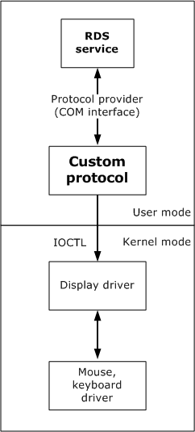

You use the Remote Desktop Protocol Provider API to create a protocol to provide communication between the Remote Desktop Services service and multiple clients.
When Windows Server loads, the Remote Desktop Services service (also known as Remote Connection Manager (RCM)) starts. The service also starts listener objects for the Remote Desktop Protocol Providers that in turn listen for client connections. The service and the protocol providers are user-mode objects that communicate by using the APIs discussed in this documentation. The protocol providers can communicate with kernel-mode drivers by using input/output controls (IOCTLs). This is shown in the following illustration.

Microsoft has implemented the Remote Desktop Protocol (RDP) to provide communication between the Remote Desktop Services service and client connections. You can create your own protocol by using the interfaces, structures, unions, and enumeration types that make up the Remote Desktop Protocol Provider API. For more information, see the following topics.
Creating a Remote Desktop Protocol Provider
Information about creating a Remote Desktop Protocol Provider. The protocol manager is implemented as a COM server and registered in a location searched when the Remote Desktop Services service starts.
Remote Desktop Protocol Provider reference
Contains interfaces, structures, unions, and enumeration types that enable you to create a custom Remote Desktop Protocol (RDP).
Â
Â